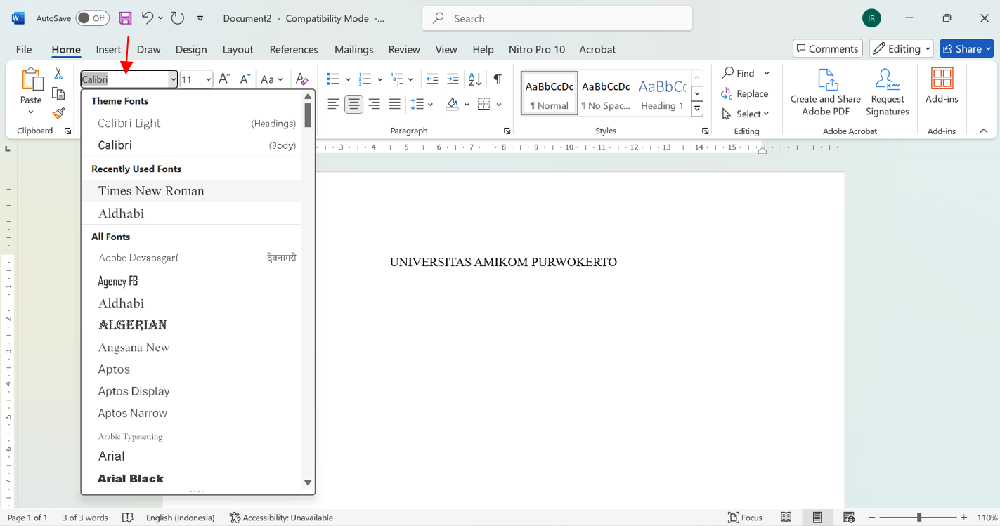
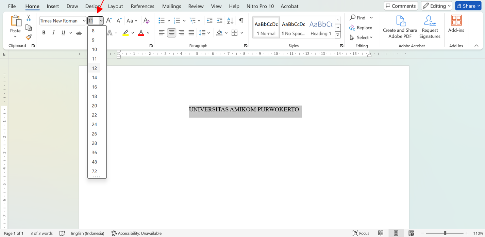
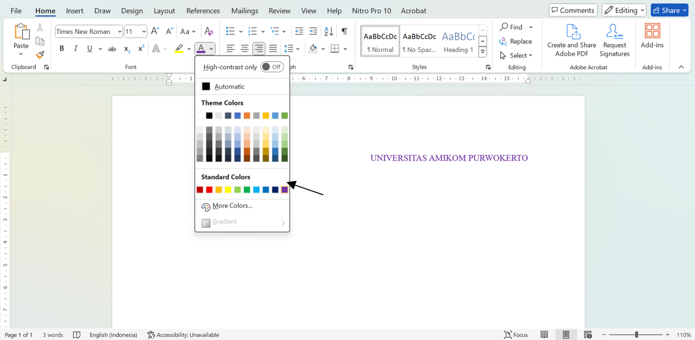
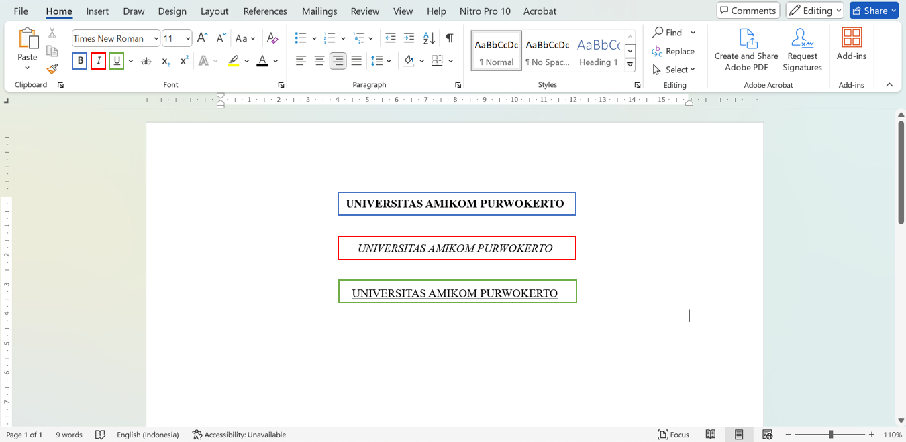
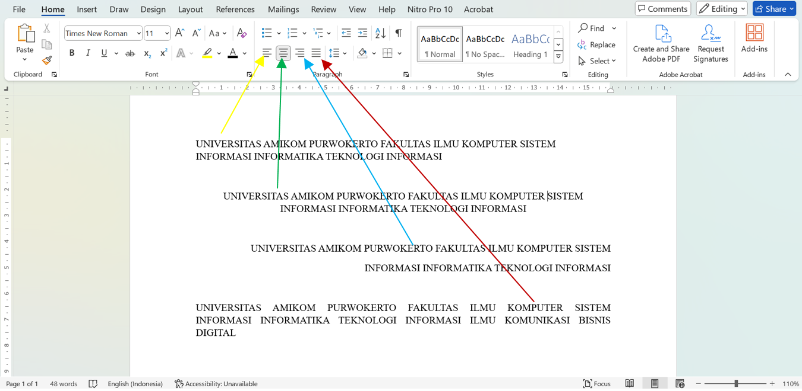
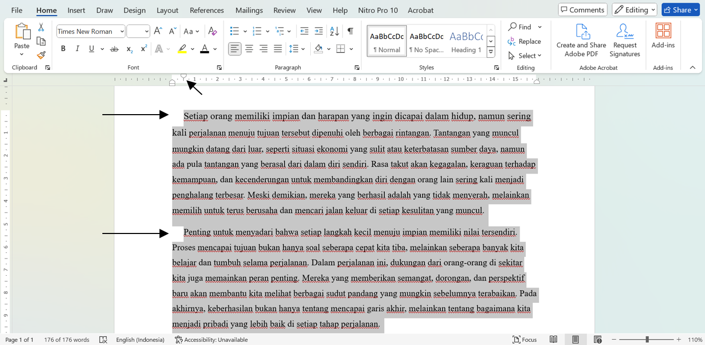
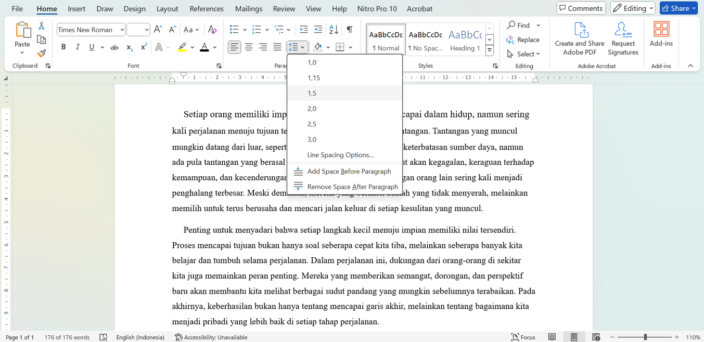

Anda akan belajar cara mengubah font, ukuran, dan warna teks, serta bagaimana menambahkan gaya seperti bold, italic, dan underline untuk menekankan informasi penting. Selain itu, kami juga akan menjelaskan cara mengatur tata letak teks dan paragraf, serta mengatur jarak antar baris untuk meningkatkan keterbacaan dokumen Anda. Dengan mengikuti tutorial ini, Anda akan dapat membuat dokumen yang lebih profesional dan menarik perhatian pembaca. Mari kita mulai dan eksplorasi berbagai cara untuk memaksimalkan penggunaan Microsoft Word!
Cara Mengubah Font
Mengubah font dalam Microsoft Word adalah langkah penting untuk menyesuaikan tampilan dokumen Anda sesuai dengan kebutuhan dan gaya yang diinginkan. Dalam bagian ini, Anda akan belajar cara memilih dan menerapkan berbagai jenis font untuk membuat teks Anda lebih menarik dan mudah dibaca.
1. Blok Teks yang akan di ubah
2. Pilih Font sesuai kebutuhan seperti pada contoh gambar berikut pada tanda panah
Cara Mengubah Ukuran Font
Mengubah ukuran font dalam Microsoft Word memungkinkan Anda untuk menekankan informasi penting dan meningkatkan keterbacaan dokumen. Di bagian ini, Anda akan mempelajari langkah-langkah sederhana untuk menyesuaikan ukuran teks sesuai dengan kebutuhan presentasi atau gaya penulisan Anda.
1. Blok Teks yang akan di ubah
2. Ubah ukuran font sesuai kebutuhan seperti pada contoh gambar berikut pada tanda panah
Cara Mengubah Warna Teks
Mengubah warna teks dalam Microsoft Word dapat memberikan sentuhan visual yang menarik dan membantu menekankan informasi penting dalam dokumen Anda. Dalam bagian ini, Anda akan belajar cara memilih dan menerapkan berbagai warna untuk meningkatkan daya tarik dan keterbacaan teks Anda.
1. Blok Teks yang akan di ubah
2. Ubah warna teks sesuai kebutuhan seperti pada contoh gambar berikut pada tanda panah
Cara Mengubah Teks Menjadi Bold, Italic, Underline
Menambahkan efek bold, italic, dan underline pada teks di Microsoft Word adalah cara yang efektif untuk menekankan informasi penting dan memberikan variasi pada dokumen Anda. Dalam bagian ini, Anda akan belajar cara cepat dan mudah untuk menerapkan gaya-gaya ini pada teks Anda, sehingga dokumen terlihat lebih menarik dan profesional.
1. Blok Teks yang akan di ubah
2. Ubah Teks sesuai kebutuhan seperti pada contoh gambar berikut pada kotak yang sesuai warna
Cara Mengubah Tata Letak Teks (Alignment)
Mengubah tata letak teks atau alignment dalam Microsoft Word sangat penting untuk menciptakan struktur yang rapi dan menarik dalam dokumen Anda. Dalam bagian ini, Anda akan belajar bagaimana mengatur posisi teks, baik itu rata kiri, rata tengah, rata kanan, atau justify, untuk meningkatkan tampilan dan keterbacaan dokumen Anda.
1. Blok Teks yang akan di ubah
2. Ubah Teks sesuai kebutuhan seperti pada contoh gambar berikut dengan cara klik sesuai warna tanda panah
Cara Mengubah Indentasi Paragraf
Mengubah indentasi paragraf dalam Microsoft Word membantu Anda mengatur tata letak teks agar lebih rapi dan terstruktur. Dalam bagian ini, Anda akan belajar cara menyesuaikan indentasi untuk meningkatkan estetika dan keterbacaan dokumen Anda.
1. Blok seluruh teks
2. Geser ruler pada bagian atas seperti pada gambar yang di beri tanda panah agar baris pertama pada paragraph menjorok ke kanan
Cara Mengatur Jarak Antar Baris
Mengatur jarak antar baris dalam Microsoft Word sangat penting untuk meningkatkan keterbacaan dan estetika dokumen Anda. Dalam bagian ini, Anda akan belajar cara menyesuaikan jarak antar baris agar teks terlihat lebih rapi dan nyaman dibaca.
1. Blok seluruh teks
2. Pilih ukuran jarak baris
